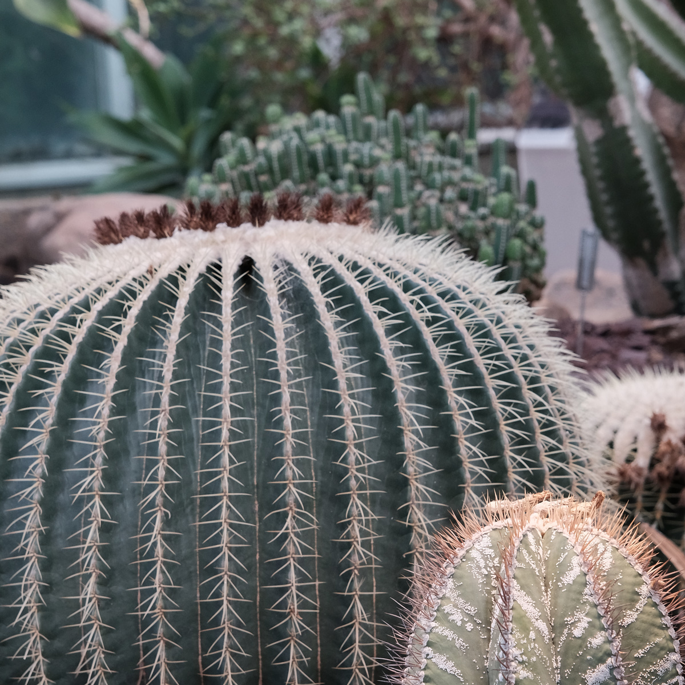

On a sunny but cold December Saturday, I rode a city bike down to the US Botanical Garden, near the Capitol in Washington DC. The building itself is a sprawling greenhouse, with sections for each climate. The centerpiece is the tall tropical garden.
In the outdoor garden, I was delighted with the holiday model train exhibit. Many different tracks and trains were running through the garden at varied heights. There were sculptures of creatures that pollinate and the plants they serve. And the tracks ran along and through a landscape made of wood, camelias, and other organic material.


Who knew there were so many varieties of poinsetta? Indoors, there were dozens of species on display. Among the poinsettas were models of Washington DC monuments, like the Lincoln Memorial and the Supreme Court.


After taking in the holiday special exhibits, I enjoyed the cactus and orchid gardens. I have been practicing with my new Fujifilm X-T5 camera and was excited about the macro capabilities of the 16-80 zoom lens. I was able to get great close-ups of flowers.
